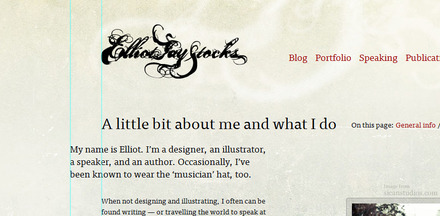
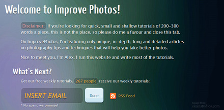
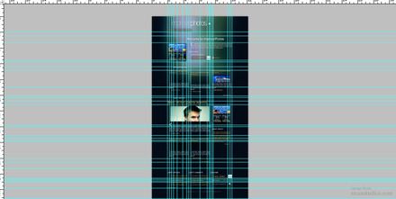
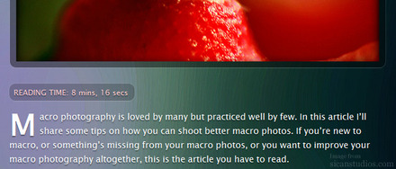
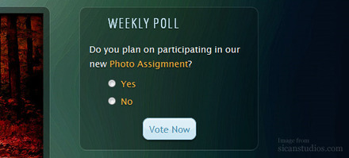
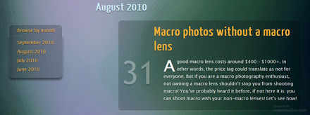
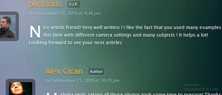
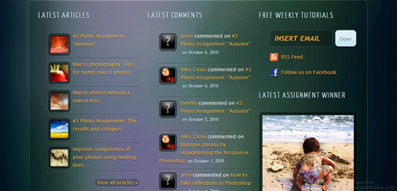

Improve Photos is a community I founded that was teaching how to improve your photos with on-camera techniques and Photoshop. All tutorials and articles were written by me. Although it was going well (over 300 unique visitors per day in first two months), I decided to close it.
The idea was to create an intriguing website showing you how to improve your photos. I wanted to make this website unique and special in terms of content but design as well. I didn't want to make another tutorial website (as if these weren't enough) teaching you quick tips in posts of 200 words or less. So, I set for myself to deliver the best content possible without looking at the word limit (average words per article: 1200). In terms of design, I was inspired from Elliot's website which separates titles and photos from text by indenting.

This would be a highly specialised niche website with the goal of converting visitors into subscribers and growing its readership. Visitors become aware of that from the moment they've “stepped foot” on this website. The welcome message with the disclaimer and subscribe options are big and prominent on the page. The visitor is guided through the process of what they should do (“What's Next?”). Furthermore, social proof is used to convince more people to subscribe to my mailing list.

The website was coded in valid xHTML Strict 1.0 and CSS 3. Once all the design elements were in place, it was then transposed into PHP and saved as a WordPress theme. The framework the website is based on is the 960 grid, modified by me. At first it may appear as if the elements are all over the place, with no organisation whatsoever (a rookie design mistake). But on closer inspection, every element aligns perfectly. Just to give you an example, look at all those guides I drew for the website in Photoshop.

The website featured a PHP style-switcher which calculated what day it is and displayed the according background. I created 7 different background images for each day of the week. In the footer there was an option to select which was your favourite day. This would display the according background and save the option using cookies. Furthermore, it would bypass the default background image of the day for ever (or until you cleared your cookies).
Popular articles with their thumbnail and excerpt were displayed without a plugin on the homepage, sidebar and footer. I had two “generators” for thumbnails; one for the main thumbnails (300px by 121px) and another one for the footer thumbnails (80px by 80px).
In order to help the visitor and enhance their user experience an estimated reading time feature was added to all the articles. In short, this was a small PHP script that would calculate the total number of words in the article and divide them by the words per minute (around 200).

Weekly polls were also another way of engaging the visitors more with the website. A weekly poll was added using UPM Polls (http://wordpress.org/extend/plugins/upm-polls/) which was the only poll plugin that was working properly. The only problem with this plugin is that it broke my code and it did not validate.

The articles page featured all the articles in one page with a quick navigation menu on the left that would "follow" you as you scrolled down the page. This was implemented using a Javascript modified by me. I added the functionality to stop the menu at a certain point (before the footer).

The regular contributors to this website were rewarded with a funky property next to their name. This was implemented using a WordPress Plugin called Members. The advantage is that I could add new roles and assign them to existing members in an instant. From there I "echoed" a span class that would colourise the title of the property in a certain way using CSS.

Many more functionalities were added to the website. A few of them include submitting your own article (with upload functionality), minify JavaScript files and CSS files to improve loading times, subscribing to comments, search functionality, backing up the database on a weekly basis, automatic generation of XML sitemaps, polls, drop caps, recent comments, iPhone and iPod Touch theme and many more.
In the footer you would find the five latest articles, recent comments, possibility to subscribe, the latest assignment winner, the possibility to search the website and submit your article.

Besides the website, I also maintained a Facebook Fan Page (and created a landing page using Facebook's Markup Language) and a weekly mailing list (coded the email template using tables and styled it to match the website's design). Also, all the CSS, JS code was minified and the website was cached for faster loading times.
{kind=link}
{kind=link}
{kind=link}
{kind=link}
{kind=link}
{kind=link}
{kind=link}
{kind=link}
{kind=link}
{kind=link}
{kind=link}